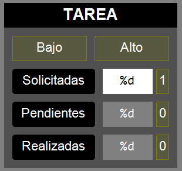

Esta sección describe un enfoque
monolítico para estructurar proyectos de automatización en
TwinCAT 3, en el cual toda la lógica de control se concentra en un único
Program Organization Unit (POU), típicamente un solo Function
Block grande.
Este planteamiento suele encontrarse en proyectos
educativos, prototipos o sistemas de baja complejidad (por ejemplo, estaciones
con pocas operaciones y transiciones).
La implementación monolítica ofrece algunas
ventajas iniciales:
Simplicidad inicial: El
desarrollador no necesita diseñar una arquitectura modular ni pensar en
interfaces entre bloques.
Rapidez en proyectos
pequeños: Permite obtener resultados funcionales de forma
rápida cuando el alcance del sistema es limitado.
Menor sobrecarga
conceptual: Es más fácil de comprender para principiantes
que están empezando en programación de PLCs.
Sin embargo, también presenta inconvenientes
importantes a medida que el sistema crece:
Escalabilidad reducida:
El bloque de control se vuelve demasiado grande y difícil de mantener.
Poco control de alto
nivel: Una implementación monolítica dificulta el control
de alto nivel del sistema (gestión de problemas, paradas completas,
etc.).
Menor flexibilidad: No
es sencillo reutilizar partes de la lógica en otros proyectos.
Dificultad en depuración y
pruebas: Los errores afectan a todo el sistema, y no pueden
aislarse fácilmente.
Riesgo de errores
encadenados: Un cambio en una sección del código puede
impactar de forma inesperada en otras.
Cuándo es adecuado un enfoque
monolítico:
En proyectos educativos
o de laboratorio, donde la claridad del flujo completo es más importante
que la mantenibilidad a largo plazo.
En sistemas muy simples
con pocas operaciones y sin expectativas de expansión futura.
En prototipos rápidos,
donde se prioriza validar una idea en poco tiempo antes de diseñar una
arquitectura más robusta.
Objetivos
Crear un proyecto de automatización para el
funcionamiento completo de la estación
Implementar la producción por lotes
Adaptar la visualización manual
Conocer cómo funcionan y cómo se usan las señales
SFCReset y SFCPause
Determinar las condiciones iniciales de la estación
Requisitos
El programa debe mantener todas
las funcionalidades del nivel anterior (Manual)
El programa debe incluir:
Un pograma MAIN en
ST
Un FB Estación en
SFC
Una Visualización
El programa debe permitir conmutar
entre modo manual (se puede actuar sobre la estación desde la
visualización) y modo automático (el programa produce) mediante
el conmutador AUTO/MAN del Panel del Operador en el frente de la
estación.
El programa debe considerar las
Condiciones Iniciales y la Condición de Marcha
antes de permitir que la estación comience a producir.
La visualización debe mostrar el valor de las
siguientes variables de la tarea:Panel de la tarea
UnidadesSolicitadas:
Variable que contiene el número de piezas que se quieren producir en
un lote. Debe poder ser editada desde la
visualización.El programa debe ser
capaz de, tras pulsar el Pulsador de Marcha,
producir el número de piezas especificado en esta variable. Esto se
denomina Producción por Lotes.
UnidadesPendientes:
Contador que toma inicialmente el valor de
UnidadesSolicitadas y se decrementa cada vez que se
produce una pieza. Se reinicia cada vez que se acaba el lote.
UnidadesRealizadas:
Contador que empieza en cero y se incrementa cada vez que se produce
una pieza. No se reincia cada vez que acaba el lote.
UnidadesRechazadas (si
aplica): Contador que empieza en cero y se incrementa cada vez que
se rechaza una pieza. No se reinicia cada vez que acaba el lote.
Definición de las piezas a producir
(ejemplo: rodamiento alto o bajo).
La visualización debe incluir, en su parte
inferior, una serie de indicadores y botones que permiten conocer el
estado de las condiciones de la estación y modificar su comportamiento:
CI: Indicador que muestra
si se cumplen o no las condiciones iniciales.
CM: Indicador que muestra
si se cumple o no la condición de marcha.
Ciclo [toggle]: Botón que indica que la
estación debe operar Ciclo a Ciclo, esto es, debe
parar entre cada iteración del lote hasta que se pulse el
Pulsador de Marcha. Debe seguir produciendo el
número de piezas que se especificó para el lote.
Pause [toggle]: Botón que pausa la
estación en su estado actual. Relacionado con SFCPause.
Reset [tap]: Botón que reinicia la
estación y la devuelve a su estado inicial. Relacionado con
SFCReset.
La visualización debe permitir, en la sección
PARÁMETROS, introducir los valores de los tiempos
utilizados en todos los FBs del programa, con el formato de las
variables de tipo TIME
Duración estimada: 6 - 8 sesiones
Guía de resolución
Resumen de la estructura monolítica
Crear un nuevo TwinCAT Project
Nombre: XXX_TC3_GYY donde
XXX es el grado (AIE, AIM, SR,
etc.) y GYY es el número de grupo (G01, G02,
etc.).
Crear un PLC Project
Nombre: FMSXXX_Monolitico donde
XXX es el número de la estación (201, 202,
etc.).
Crear un único bloque funcional
Nombre: FB_Estacion
Lenguaje: SFC
Variables:
Declarar las variables de la tabla de E/S
en las imágenes de E y S.
Implementación: Implentar el código correspondiente
a la lógica de control de la estación completa.
Crear una instancia del FB_Estacion en el programa
MAIN.
VAR
// Variables locales
CodigoPale: BYTE;
// Bloques funcionales
Estacion: FB_Estacion;
END_VAR
--------------------------------------------------------
IF NOT Estacion.SelectorManual THEN
Estacion();
CodigoPale := Estacion.CodigoPale;
ELSE
CodigoPale.0 := Estacion.CodigoPaleBit0;
CodigoPale.1 := Estacion.CodigoPaleBit1;
CodigoPale.2 := Estacion.CodigoPaleBit2;
END_IF
Realizar una visualización para el programaEjemplo de visualización de la estación FMS203
Todas las señales de E/S deben estar representadas.
Decidir si los botones deben ser Tap o
Toggle.
Se añaden las variables de la tarea:
unidades solicitadas, pendientes, realizadas y rechazadas (si
aplica).
Los tiempos utilizados en los bloques funcionales
deben ser configurables en la visualización (sección PARÁMETROS).
Debe tener una barra inferior con información sobre
las condiciones iniciales, la condición de marcha, y controles para
Pausar, Reiniciar y ejecutar la tarea
Ciclo a Ciclo.
Añadir cualquier otra información que sea
interesante mostrar.
Compilar el proyecto y comprobar que no tiene errores.
Si se tiene acceso a la estación
Buscar la estación en la red y conectarse
Buscar los terminales de E/S con TwinCAT3
Renombrar los terminales de E/S según la tabla
Enlazar las variables del programa con los
terminales de E/S
Activar la configuración en la estación
Descargar el programa en la estación (Log
in)
Ejecutar el programa (Start)
Probar el funcionamiento
Si no se tiene acceso a la estación
Activar la configuración en el equipo local
Descargar el programa en el equipo local (Log
in)
Ejecutar el programa (Start)
Comprobar que la visualización cambia los valores
de las variables correctas
Gestión
de SFCReset y SFCPause
Estas son entradas especiales proporcionadas
por TwinCAT para FBs basados en SFC (se les denomina SFC-Flags). Permiten un
control externo sobre la ejecución del código SFC.
SFCPause (BOOL):
Si se pone a TRUE, el
SFC congela su estado actual.
Los temporizadores de los pasos activos
(S1.t,S2.t, etc.) dejan de contar.
Las acciones
activas continúan ejecutándose.
Las transiciones no se evalúan. El
SFC no avanzará a pasos siguientes.
Cuando SFCPause vuelve
a FALSE, el SFC reanuda la ejecución desde donde se quedó (los
temporizadores continúan, las transiciones se evalúan).
SFCReset (BOOL):
Si se pone a TRUE, el
SFC fuerza el retorno al paso inicial (Initial).
Todas las acciones se desactivan (como si se
saliera de los pasos activos).
Las variables internas del SFC
(como S1.x o S1.t) se reinician.
El SFC permanecerá en el
paso Initial mientras SFCReset esté
a TRUE.
Normalmente, SFCReset se activa con un
pulso (tap) o se mantiene activo durante la condición de reinicio.
En nuestra implementación de ejemplo de la estación 203,
PausaEstado y ReiniciaEstado están controlados por dos botones
situados abajo a la derecha en la visualización.
Implementación Típica:
En este nivel, estas variables están asociadas
directamente con los botones de la visualizaciónEjemplo de asociación de SFCPause al botón de la visualización
Importante: Por defecto, TC3 te permite declarar esas
variables pero no utilizarlas. Para que TC3 tenga en cuenta estas funcionalidades es
necesario darle permiso de uso en el proyecto:
CD sobre la línea
<nombre> Project → Properties
Selecciona la pestaña SFC
Activa las casillas de SFCPause y
SFCReset en la columna de Use.
Producción por lotes
El programa debe ser capaz de realizar un número de ciclos
determinado (lote) con una sola pulsación del botón de marcha.
Un ciclo se inicia al traer un palé hasta la posición de
producción y termina cuando una pieza ha sido completada y sale el palé hacia la siguiente
estación.
Se van a utilizar cuatro variables numéricas para gestionar el
lote:
UnidadesSolicitadas. Especifica el
número total de ciclos que queremos realizar.
UnidadesPendientes. Indica el número de
ciclos restantes para terminar el lote.
UnidadesRealizadas. Indica el número
total de unidades completadas, sumando todos los lotes, es decir, no se resetea cada
vez que realizamos un nuevo ciclo.
UnidadesRechazadas (opcional, depende de
la estación). Indica el número total de unidades que se han rechazado por no cumplir
las condiciones necesarias para ser realizadas.
En la primera etapa se inicializa la variable
UnidadesPendientes con el valor de UnidadesSolicitadas. Esto se
realiza dentro de una acción con activación a la salida [X].
IF (UnidadesPendientes = 0) THEN
UnidadesPendientes := UnidadesSolicitadas;
END_IF
Código dentro de acción a la salida
A lo largo de la lógica de control se actualizarán las
variables UnidadesRealizadas y UnidadesRechazadas cuando
corresponda.
Al finalizar el ciclo se debe actualizar el valor de la
variable UnidadesPendientes y comprobar si ha llegado a cero. En tal caso se
vuelve a la etapa inicial S0 y, si no, se vuelve a una etapa posterior para
evitar la necesidad de pulsar el pulsador de marcha.
IF (UnidadesPendientes > 0) THEN
UnidadesPendientes := UnidadesPendientes - 1;
END_IF
Código dentro de la acción con activación a la entrada en S27


{kind=link}